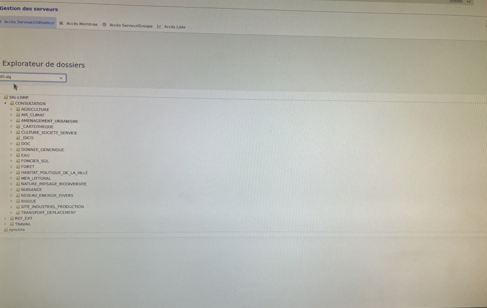
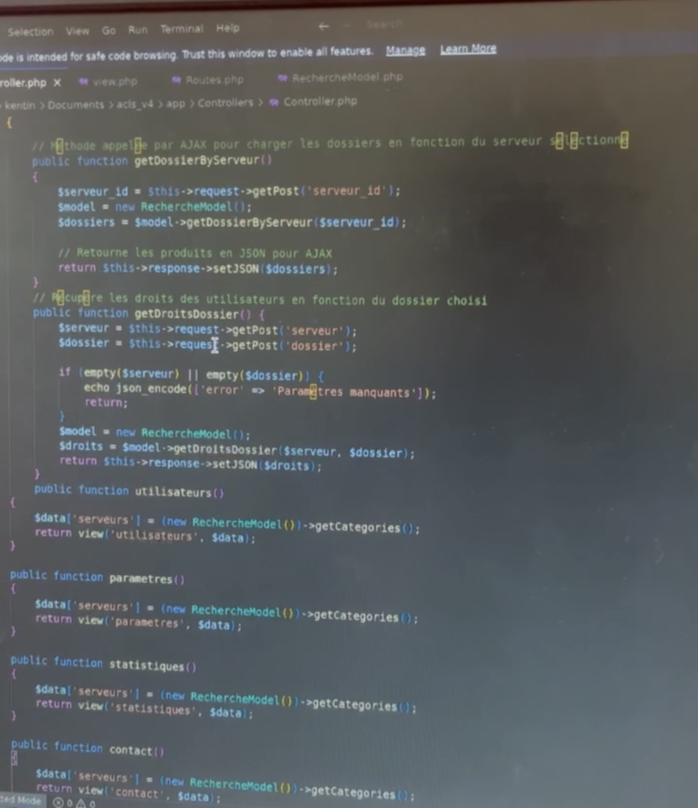
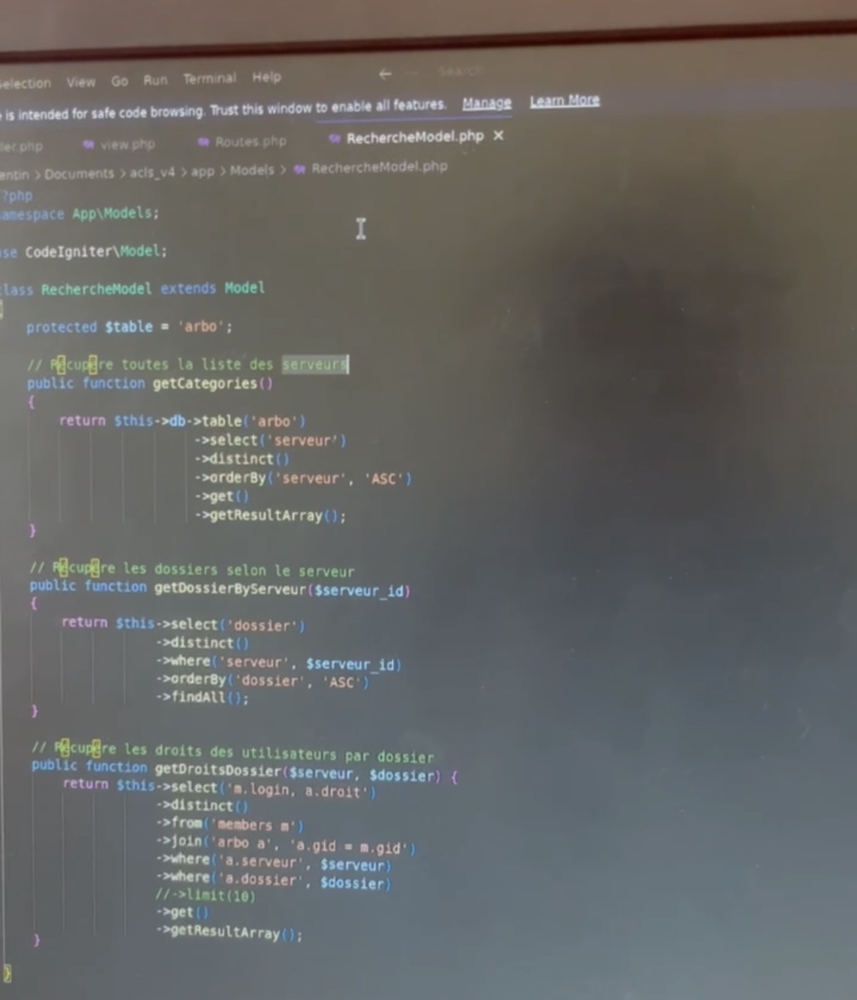
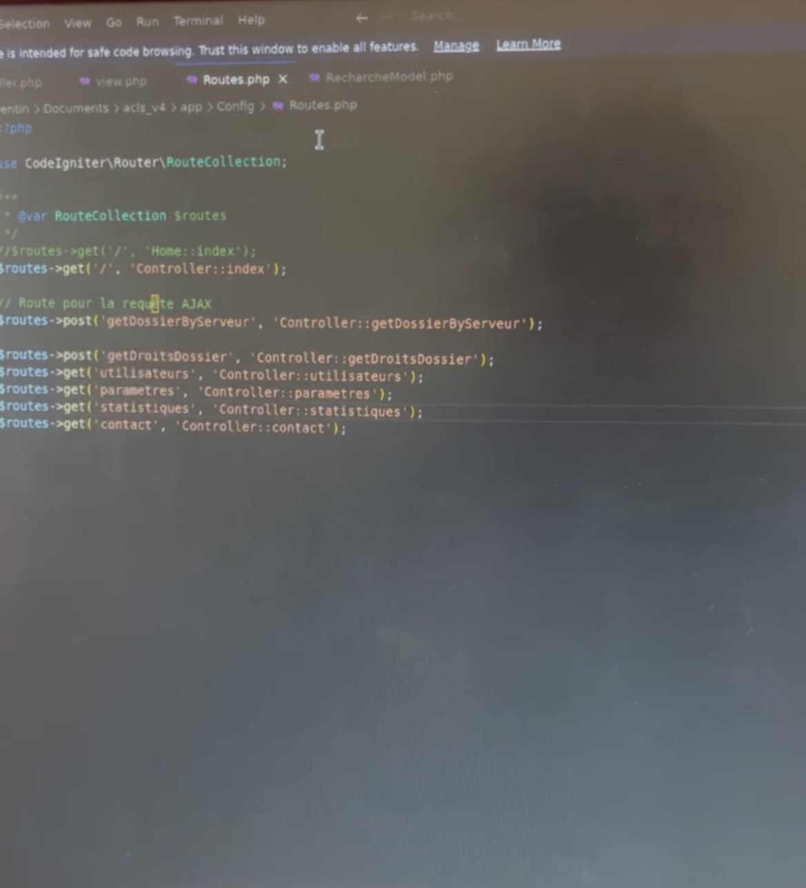

Stage en informatique — DREAL Occitanie (Direction Régionale de l'Environnement, de l'Aménagement et du Logement)
La réalisation d’un intranet
L’un des principaux projets sur lesquels j’ai travaillé durant mon stage a été la reconstruction d’un intranet destiné au service informatique. Cet outil permet aux agents de retrouver rapidement les informations concernant les droits d’accès aux dossiers des travailleurs de la DREAL Occitanie. Il permet notamment de vérifier si une personne possède des droits de lecture ou d’écriture sur un dossier. L’objectif principal était de simplifier et d’accélérer la recherche d’informations. Grâce à cette solution, les agents peuvent accéder plus facilement aux informations dont ils ont besoin, ce qui leur permet de gagner un temps important dans leurs tâches quotidiennes.

Les compétences développées
Pour réaliser ce projet, j’ai principalement travaillé avec CodeIgniter 4, ce qui m’a permis d’approfondir mes connaissances dans ce framework et de mieux comprendre son fonctionnement dans un contexte professionnel. J’ai également appris à connecter et exploiter des bases de données au sein d’un site web. Ces connexions m’ont permis de récupérer et d’afficher dynamiquement les informations concernant les travailleurs ainsi que leurs différents droits d’accès. Une partie importante du projet a également consisté à créer différentes requêtes permettant de récupérer les bonnes informations dans la base de données et de les afficher de manière claire et facilement accessible.

Une meilleure organisation du code
Ce stage m’a aussi permis d’améliorer ma manière de programmer. J’ai appris l’importance d’avoir un code structuré, organisé et maintenable, notamment dans le cadre d’un projet destiné à être utilisé et potentiellement repris par d’autres développeurs. J’ai ainsi travaillé avec une organisation basée sur différents éléments de CodeIgniter 4, notamment : un routeur pour gérer les différentes pages et actions du site ; des contrôleurs pour gérer la logique de l’application ; des modèles (Models) pour communiquer avec les bases de données ; plusieurs fichiers PHP pour organiser les différentes parties du projet. Cette organisation m’a appris à éviter de regrouper tout le code dans un seul fichier et à séparer les différentes fonctionnalités afin de rendre le projet plus clair, plus propre et plus facile à faire évoluer.


Une expérience enrichissante
Ces cinq semaines à la DREAL Occitanie ont été une expérience particulièrement enrichissante. Elles m’ont permis de découvrir les exigences du développement informatique dans un environnement professionnel, mais également de mieux comprendre l’importance de la qualité du code, de l’organisation et du respect des bonnes pratiques de développement web. Ce stage m’a surtout permis de confirmer mon intérêt pour le développement informatique. J’ai pu progresser techniquement, notamment avec CodeIgniter 4, PHP et les bases de données, tout en découvrant les contraintes et les méthodes de travail d’un véritable service informatique. Cette expérience constitue donc une étape importante dans mon parcours et m’encourage à continuer à développer mes compétences dans le domaine de l’informatique et du développement web.